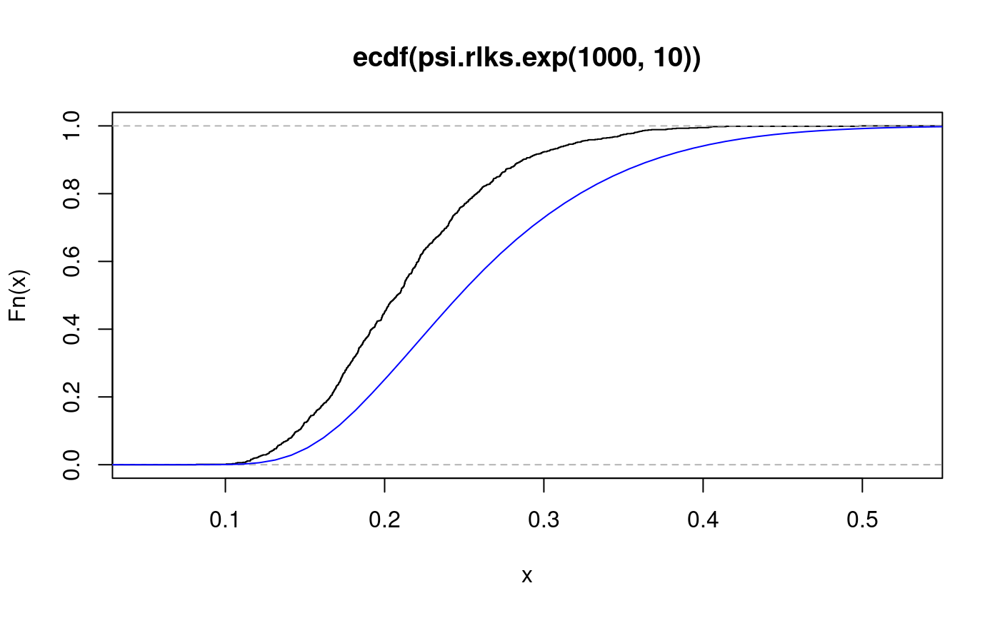

lilliefors.exp.RdDistribution function, quantile function and random generation for the distribution of the Lilliefors's statistic for exponential hypotheses.
psi.plks.exp(q, df, Nsim = 1000, lower.tail = TRUE) psi.qlks.exp(p, df, Nsim = 1000) psi.rlks.exp(n, df)
| p | vector of probabilities. |
|---|---|
| q | vector of quantiles. |
| df | degrees of freedom of the statistic. |
| n | number of observations. |
| Nsim | number of simulations. |
| lower.tail | if TRUE (default) lower tail, otherwise upper tail. |
The prefixes 'p', 'q' and 'r' follow the conventions of distribution functions in base R. The prefix 'psi.' is a reminder that they are in package "psistat".
The distribution function and the quantiles are obtained from a sample
of size Nsim, ideally large. So, they should not be expected to
give identical results in repeated calls with the same parameters.
Instances of the statistic are obtained by generating random samples
of length df from the exponential distribution, transforming
each by the formula \(z=x/{\bar x}\), and calculating the
Kolmogorov statistic for the transformed sample, \(z\), with
\(F_0\) set to the exponential distribution with rate 1.
todo: pdf
for psi.plks.exp, a numeric vector of the same length as the
vector q.
for psi.qlks.exp, a numeric vector of the same length as the
vector p.
for psi.rlks.exp, a numeric vector of length n
representing a sample from the distribution of the Lilliefors KS
statistic for the exponential distribution.
lillie.test in package nortest for the Lilliefors test
for normality.
#> 0.1 0.2 0.3 0.4 #> 0.002 0.428 0.900 0.996#> 0.25 0.5 0.75 #> 0.1736681 0.2081081 0.2506081# overlay the cdf of Kolmogorov for comparison. lines(seq(0,1,length=100), psi.pks(seq(0,1,length=100),10),col="blue")